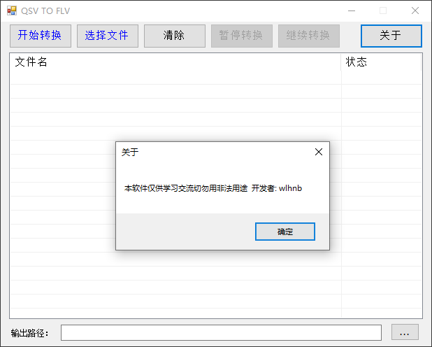
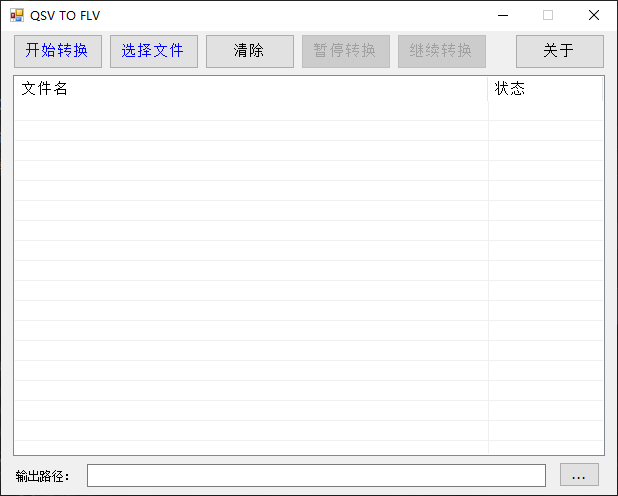
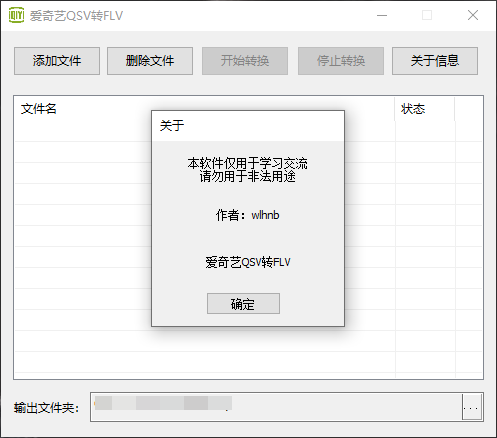
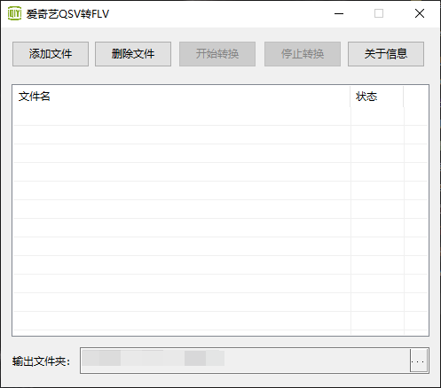

爱奇艺QSV格式转换FLV格式
软件截图




SetHomePage.dll该文件会被杀毒软件报毒请关闭杀毒软件或添加至信任区(V2版没有该问题)
1.解决按下清除键无法再次转换文件问题
1.解决SetHomePage.dll文件报毒问题
2.代码全部重构
3.GUI重新绘制
| 名称 | 介绍 | 下载 |
|---|---|---|
| QSVFLV V2.0.1 | 将爱奇艺qsv视频格式转换成flv格式 | EXE | QSVFLV V2.0 | 将爱奇艺qsv视频格式转换成flv格式 | EXE |
| QSVFLV V2.0便携版 | 将爱奇艺qsv视频格式转换成flv格式 | ZIP(终止支持) |
| 名称 | 介绍 | 下载 |
|---|---|---|
| QSVFLV V1.0 | 将爱奇艺qsv视频格式转换成flv格式 | ZIP(终止支持) |